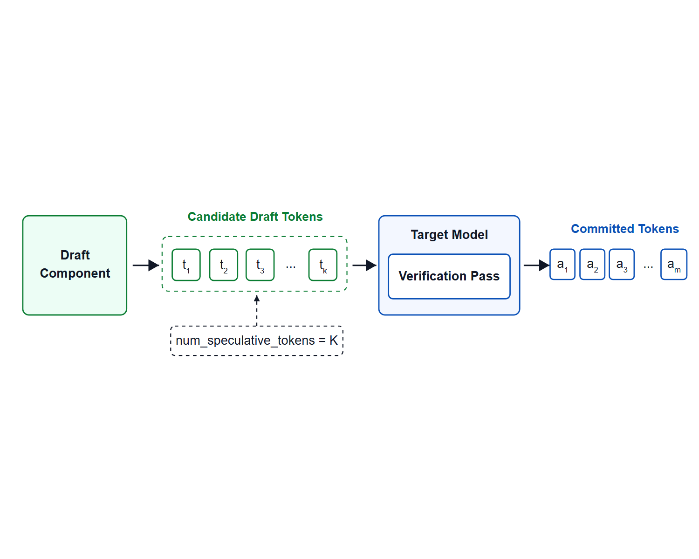
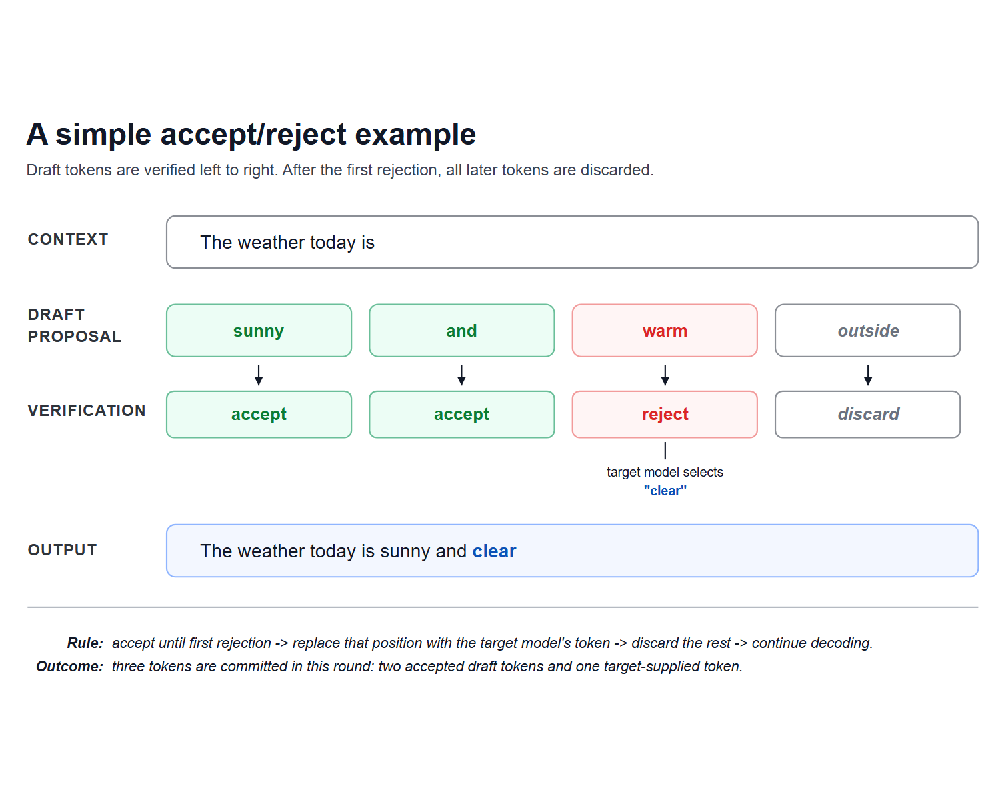

大型语言模型支撑着广泛的应用，但规模化服务需要精细优化。标准自回归解码是大多数LLM serving系统的基线：模型生成一个token、append到序列、再用更新后的序列生成下一个。简单可靠，但服务循环一次只推进一个已提交token。
投机解码（speculative decoding）通过draft-and-verify机制在此基线上构建效率：轻量draft组件提出候选未来token，target模型在提交前验证它们。多个draft token被接受时，单个target验证步可提交多个输出token、且保持target的输出行为。
本文探索vLLM里的投机解码，实测AMD Instinct™ MI300X/MI355X + ROCm™ 平台。本文为GitHub README格式，命令摘录作说明用途。
标准自回归解码中，每个decode步产生并提交一个新token。生成四个输出token需要四个顺序decode步：context→model→T1；context+T1→model→T2；context+T1T2→model→T3；context+T1T2T3→model→T4。

每步生成的token append到序列、成为下一步输入。解码循环简单，但每个输出token都要一次模型decode步。长生成时，这个逐token循环可能主导延迟、限制服务吞吐。
投机解码的关键问题：能否在保持原模型输出行为的同时，减少「一次只前进一个token」的频率？
投机解码把proposal与verification分离：draft组件先提几个候选token，原模型（target）在提交前验证它们。
投机解码不替换原模型：保留原模型为target（负责最终输出），在它前面加更快proposal阶段。每轮：draft提一个或多个候选token（未立即提交）；target在一次验证pass里评估候选序列。

验证从左到右：每个draft token用target对应位置结果检查；被接受的提交到输出序列；一个被拒时，同一proposal后续候选不再接受。被拒时target提供下一个token，其余draft token丢弃，从更新后的序列继续生成。
概念上，标准自回归：target→T1；target→T2；target→T3；target→T4。投机解码让多个候选位置一起评估：draft提T1T2T3T4 → model验证 ✓✓✗停 → 提交T1T2 + 替换token。
简单接受/拒绝例子：假设当前prompt是「The weather today is」；draft提「sunny and warm outside」；target左到右验证：第一个token sunny接受、and接受，第三个位置draft提warm但target选clear，剩余outside丢弃。下一轮从「The weather today is sunny and clear」继续。绿色框=存活draft token、红框=首个被拒、灰框=被丢弃、蓝色=target输出（非draft）。
所有投机解码方法遵循相同draft-and-verify总流程，但draft组件设计不同。主要差异：① 从target收到的信息类型；② 这些信息如何纳入起草；③ 候选token顺序生成还是并行。
据此分三类：
Native MTP模块：直接内建进target架构；用模型原生辅助预测路径；顺序生成候选token。
独立MTP drafter：用与特定target配对的独立checkpoint；推理时用target激活和共享KV-cache信息；顺序生成。
专用target-conditioned草稿网络：为特定target训练的独立speculator，包括EAGLE-3（从target隐藏态自回归起草）、D-Flash（并行块起草）、DSpark（加轻量因果修正 + 置信度前缀选择）。
draft组件不是完全独立操作：可能收到target的隐藏表示、若干选中层的隐藏态、target的KV cache、或多个target表示的组合特征。
多token预测（MTP）指模型原生机制族：预测超出紧邻下一个token的token。vLLM里，当target模型含兼容辅助预测组件时可用native MTP（vLLM文档引用 [2]）。
首个投机步：MTP组件把target的隐藏表示与当前token信息组合预测第一个draft token。后续步：用新draft token和上一步MTP产生的隐藏态预测下一候选。配置的候选数提出后，target一次验证pass一起评估。
流程：target隐藏表示 + 交错输入/最新draft token嵌入 → 模型特定融合/投影 → 辅助预测层 → draft token logits。两个输入用途不同：(1) 隐藏表示承载前序序列信息；(2) token嵌入标识起草从哪个token继续。常见实现沿隐藏维组合后进辅助预测层。
物理MTP层数与配置的投机长度是不同概念。当num_speculative_tokens超过checkpoint直接提供的预测深度时，vLLM可经额外前向pass重用MTP路径。更大的值提出更多候选但引入更多顺序起草工作。MTP与target架构紧密耦合，部分MTP路径共享组件使额外内存开销相对适中，但生成多个投机token仍需验证前顺序起草。
Gemma 4用与特定target配对的独立打包MTP草稿组件（Google Developers Blog《Gemma 4的MTP》[3]）。草稿组件有自己checkpoint，推理时与target紧密连接。
它用target产生的激活、共享target的KV cache：重用target已算的上下文信息，而非独立处理接受前缀。草稿组件层数同样与配置的投机长度分离：请求多个候选时顺序生成它们（Draft1→Draft2→Draft3→...→配置完成→target验证）。
注意：Gemma 4 assistant checkpoint即使经model字段提供、也走MTP路径。vLLM把assistant组件连到target并允许共享target KV cache。
EAGLE-3用为特定target训练的专用草稿网络。草稿组件有自己的执行路径，但紧密受target产生的信息制约（EAGLE-3论文 [4]）。
target前向pass期间，EAGLE-3从target Transformer三个阶段的隐藏态录制：起始附近、中段附近、末端附近：同一接受序列在target处理不同阶段的上文表示。
三个隐藏态被拼接+投影成单个融合target特征；该融合表示再与采样token的嵌入组合、进入EAGLE-3草稿解码器。两个输入用途不同：融合target特征用target前向多阶段信息总结接受序列；采样token嵌入标识起草从哪个token继续。
EAGLE-3自回归生成draft token。首个draft token用接受序列算的融合target特征 + 采样token嵌入；产出draft token后其嵌入喂进下一起草阶段。因target尚未处理后面的投机位置，EAGLE-3用上一个草稿组件输出继续。
这种顺序反馈给后面的draft token对前面草稿token的直接依赖。但生成更多投机token也要更多顺序起草工作。
D-Flash用为特定target训练的专用草稿网络。不同于MTP/EAGLE-3顺序生成，D-Flash用一次前向并行预测整块未来位置（Z-Lab DFlash [5]）。
每块以锚点token（anchor）开头：target已知/确认的token，D-Flash不用预测它，只提供掩码位置后已知起点。后续轮通常是上一验证pass返回的额外target token。
块布局：位置0输入anchor、位置1-6掩码；一次D-Flash前向输入掩码位置、输出draft1-draft6并行。
像EAGLE-3，D-Flash先把若干target层隐藏态拼成融合表示；关键区别在用法：EAGLE-3在自回归草稿网络输入处组合它，D-Flash把融合target上下文转成草稿网络每层都可用的额外Key/Value。掩码draft位置的query可同时注意：来自target的K/V + draft块自己产生的K/V：target上下文贯穿草稿网络、非仅在输入供一次。
草稿块生成后target一次验证。接受从左到右：接受直到首个拒绝、其余丢弃。
主要特征：所有掩码位置一起在单次草稿网络前向预测（draft1 draft2 draft3 draft4一起），不同于顺序（draft1→draft2→...）。因一起预测，后位置不同一pass里早位置采样的输出；去掉自回归的逐token反馈，后位置效果依赖训练的checkpoint和工作负载，尤其长草稿块。
DSpark用两个额外机制扩展并行起草：① 引入块内token依赖的轻量顺序头；② 提交给target验证的前缀做基于置信度的选择（DSpark论文 [6]）。
DSpark用修改版D-Flash作并行骨干。骨干一次前向为所有位置算主draft计算，产出每位置的隐藏态和一组base logits。继承D-Flash的target上下文制约。
全并行草稿组件预测每位置时没先看到同块较早位置的token：多个延续都合理时可能产生不一致组合（如「of course」和「no problem」都对、但独立逐位置预测可能得「of problem」）。
DSpark在并行骨干后加轻量Markov顺序头解决：骨干仍一起算所有位置base logits；顺序头从左到右选token、用之前选中的draft token调整每位置：对上位置用紧邻前一个选中token产生小bias调整base logits。主草稿网络一起处理所有候选位置一次前向，之后只跑轻量顺序头做逐位置调整。这让后面draft token依赖块内已选token、无需对每位置重跑整个网络。
DSpark也含置信度头可选更短draft前缀验证，但此特性在本实验用的vLLM路径未激活：基准只反映并行草稿网络 + 轻量Markov修正。target一次验证、左到右提交直到首个拒绝。
五种方法共同点：target仍在一次验证pass评估提议序列、接受决策左到右直到首个拒token。差异小结：
Native MTP：模型原生辅助MTP路径；用target或上一MTP隐藏表示 + 当前draft token信息；经反复用MTP路径顺序生成。
Gemma 4 MTP：与target配对的独立MTP草稿组件；用target激活 + 共享target KV cache；经配对MTP组件顺序生成。
EAGLE-3：专用自回归草稿网络；用target前向后段/中段/末段捕获的隐藏态融合表示；顺序生成、每draft token影响下一个。
D-Flash：专用并行草稿网络；融合target隐藏态作为每层额外K/V；所有候选位置一次并行前向。
DSpark：D-Flash风格并行网络 + 轻量Markov头；用并行草稿网络同样的target制约信息；一次并行前向 + 轻量顺序调整token选择。
vLLM用 `--speculative-config` 配置。主要差异是方法名、是否需要独立draft checkpoint、以及请求的候选token数。当前vLLM支持mtp、eagle3、dflash、dspark作为method值。配置：native MTP无独立checkpoint（model省略）；Gemma 4 MTP/EAGLE-3/D-Flash/DSpark需独立checkpoint（model指向为target训练的）。
启用前检查：装的vLLM版本支持该方法和模型架构；draft checkpoint与target/method兼容；num_speculative_tokens与checkpoint兼容；model card支持目标硬件和推理后端。
内存考虑：native MTP不加载独立checkpoint、可能共享embedding表/输出头；Gemma 4 MTP/EAGLE-3/D-Flash/DSpark加载额外draft权重，需预留足够GPU内存余量。实际开销取决于草稿组件大小、数值精度、张量并行配置和运行时缓冲。
多个组织在Hugging Face发布预训练draft模型：Google提供Gemma 4的MTP assistant；Z-Lab维护D-Flash checkpoint集合；Red Hat AI提供EAGLE-3/D-Flash/DSpark三方法草案模型；DeepSeek的DeepSpec集合为三方法提供匹配checkpoint；LightSeek专注Kimi的EAGLE草案；Inferact发布MiniMax和Kimi的草案模型。
典型：Google（Gemma 4 MTP，E2B/E4B/12B/26B-A4B/31B）、LightSeek（EAGLE-3/3.1，K2.5/K2.6/K2.7-Coder）、Red Hat AI（EAGLE-3/D-Flash/DSpark，-speculator.eagle3/.dflash/.dspark后缀）、Z-Lab（D-Flash，Qwen3/3.5/3.6/Gemma4/Kimi/MiniMax/GPT-OSS/Llama）、DeepSeek（DeepSpec，Qwen3-4B/8B/14B + Gemma4 12B，如eagle3_qwen3_8b_ttt7）、Inferact（MiniMax-M3-EAGLE3/Kimi-K3-DSpark）。
启用后实际问题：额外起草工作是否提升端到端服务性能。候选不必每位置都对：target提交前评估。性能取决于多少提议token被接受、省下的target解码工作是否超过起草+验证成本。用任务的基准而非随机token序列评估。主要指标：输出token吞吐 + 相对基线加速比；平均接受长度和draft token接受率（可用时）；相对基线的模型质量。
覆盖：五种方法 × 多target家族（Gemma/Qwen/MiniMax/Kimi），在AMD Instinct MI300X、MI355X用ROCm。
主要观测（吞吐比，随模型/方法/工作负载/N变化）：
gemma-4-26B-A4B-it：Gemma 4 MTP最高2.74×（GSM8K）/2.62×（MBPP），D-Flash最高2.87×（MATH500）/2.79×（HumanEval），EAGLE-3 2.11-2.27×。
gemma-4-31B-it：Gemma 4 MTP 2.00×（GSM8K）/1.99×（MBPP），D-Flash 2.34×（MATH500）/2.05×（HumanEval）；EAGLE-3/DSpark均超基线。
Qwen3-8B：DSpark 1.15×-1.63×（MATH500最小/GSM8K最大）、D-Flash 1.08-1.27×；EAGLE-3在GSM8K/HumanEval/MBPP超基线、MATH500低于基线。
Qwen3.5-27B/122B-A10B/Qwen3.6-27B：Native MTP最高值高于对应D-Flash；本组最大2.20×（Qwen3.5-122B-A10B on MATH500）；native MTP最高吞吐的N=4-7因模型/数据集而异。
Qwen3.6-35B-A3B：D-Flash 1.77-2.06×（每数据集N=7最大）、native MTP 1.28-1.49×（N=6最大）：同家族模型结果也不同。
MiniMax-M3-MXFP8：EAGLE-3达2.09×（HumanEval、N=4）；Kimi-K2.5：EAGLE-3达2.33×、D-Flash达2.68×（EAGLE-3最高常在N=4、D-Flash在N=7）。
跨实验，最高吞吐对应的N不恒定：顺序方法吞吐常在前几个N递增后走平；D-Flash/DSpark的N=7常是高吞吐设置、更大值不持续增。
投机解码应视为运行时优化而非对每种工作负载都等好的固定设置。最高吞吐的num_speculative_tokens取决于多少提议token被接受、避免的target decode工作是否超过起草+验证成本。
可观测性重要。model card推荐/示例配置是起点，最终用代表性工作负载和端到端测量选设置。有用信号：吞吐、平均接受长度、整体接受率、逐位置接受率。
更大proposal窗口给系统更多一次提交多token的机会；但后面位置接受可能下降：额外候选贡献小却仍加起草+验证工作，导致吞吐走平或倒退。
起点：native MTP用N=1保守起点（最少额外顺序起草工作），确认正确性/稳定性后扫描2,3,4,5,6,7。D-Flash从checkpoint推荐/支持的proposal长度开始：许多checkpoint用固定block size（如block_size=16 → 最大num_speculative_tokens=15，首位置是确认锚点、其余15是候选）；实际测N=3,7,11,15，跨实验N=7常高吞吐、部分工作负载N=11最大。DSpark的num_speculative_tokens设每轮候选数，实验里全配置proposal都提交验证，N=3和N=7用端到端吞吐比较。
匹配工作负载：GSM8K/MATH500中，中深proposal长度常对应高吞吐（native MTP Qwen3.5-122B到N=7、D-Flash到N=7/11）；HumanEval/MBPP里中等proposal常更高吞吐（代码局部结构可预测、但格式/标识符/实现会使看似合理延续分歧）。
示例工作流：① 从checkpoint支持/推荐配置开始；② 用代表性prompt和生成设置基准；③ 记录吞吐/平均接受长度/接受率；④ 扫描几个更小更大的proposal长度；⑤ 按与目标工作负载最相关指标选设置（本实验以端到端服务吞吐为主）。所选配置不必然有最长proposal、最高接受率或最大平均接受长度：要考虑起草成本/验证成本/接受token/目标指标间的权衡。
本指南不深覆speculator训练。典型工作流：① 准备代表性prompts；② 用target生成响应；③ 选隐藏态生成模式；④ 收集所需target隐藏态；⑤ 训练speculator；⑥ 测接受和服务吞吐。
准备代表性prompts：反映预期工作负载（聊天/数学/代码/工具/多语言）；训练用响应必须由speculator将支持的确切target模型生成，tokenizer/chat template/thinking mode/生成配置匹配预期部署。vLLM文档强调：对现有响应套target的tokenizer/template不使数据target特定：响应本身需来自target模型。
隐藏态模式：在线（运行时vLLM server现算现弃，省磁盘缓存但要同时跑target推理+训练算力）；离线（训练前算好存盘，之后释放全部GPU但需大量存储）；混合（首epoch生成+缓存、后续复用，付一次生成成本无需单独预处理阶段）。
收集target信息：vLLM server可跑target并暴露所选草案方法需要的层隐藏态；选自定义target层时，speculator训练配置必须用相同层选择。按方法收集：EAGLE-3用选中层隐藏态自回归起草；D-Flash用target特征训并行块预测网络；DSpark在D-Flash风格上加强量顺序和置信度头；MTP训练微调target自己的MTP组件（需target已含兼容MTP层）。
训练与测试：speculator配置须匹配target隐藏尺寸/词表/tokenizer/选中层；方法特定设置（草案深度/块大小/序列长/lr）也要选。训后检查checkpoint、与target一起在vLLM服务。训练loss不足评判：重要测量是接受长度/接受率/draft延迟/GPU内存/端到端吞吐。接受弱时调整prompt混合或训练配置重来。原则：用speculator预期支持的同一target、同一生成模式、同一代表性工作负载。
Summary：本文探了vLLM投机解码作为LLM serving的draft-and-verify。examined五种起草方法：native MTP、Gemma 4 MTP、EAGLE-3、D-Flash、DSpark：主要在如何用target信息、候选token顺序/并行/并行+轻量修正。实验覆盖选定Gemma/Qwen/MiniMax/Kimi模型on AMD MI300X/MI355X + ROCm。
吞吐因target/草稿/工作负载/proposal长度/服务配置而异。跨测试配置，有些设置变化小或低于非投机基线，几个模型-工作负载组合吞吐比超2×：上端示例：D-Flash on gemma-4-26B-A4B-it 2.87×、Gemma 4 MTP on同target 2.83×、D-Flash on Kimi-K2.5 2.68×。
Proposal长度是重要实验变量：增大num_speculative_tokens有时在前几个设置增吞吐、更大值可走平或降；checkpoint推荐给起点、但部署配置需代表性工作负载测量+接受指标。
Future work：加入非学习方法（n-gram speculation、suffix decoding），尤其code editing/agentic loops这类重复token模式；跨并发级、prompt/输出长度、batch size、采样设置的更广评估；研究speculator训练数据如何影响跨代码/数学/聊天/多语言/工具/结构化输出的接受；对draft生成、target验证、KV-cache、graph执行、调度做更深profiling。
参考：https://vllm.ai/blog/2026-08-23-speculative-decoding-amd-gpus